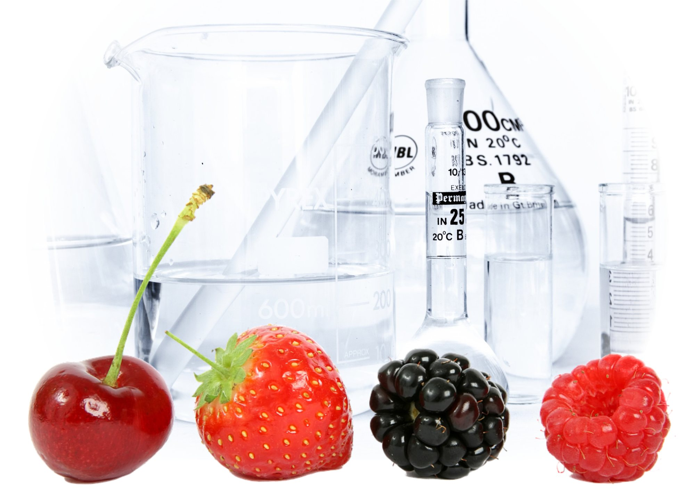
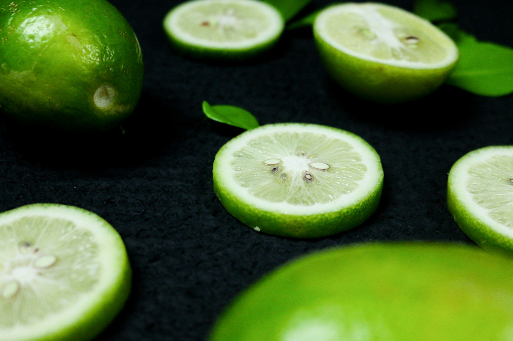
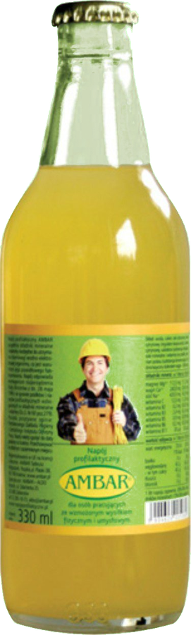
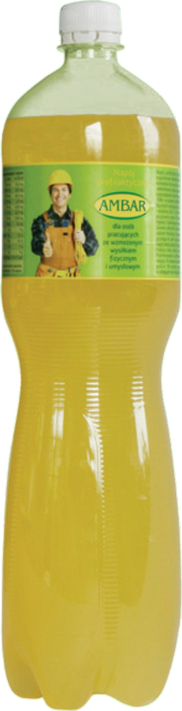
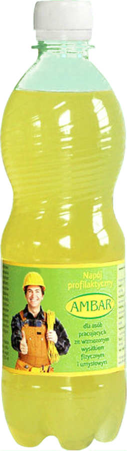

AMBAR · ALDO — Brzezie koło Krakowa — od 1990
Dobry produkt zaczyna się od dobrego surowca.
Koncentraty owocowe, emulsje, aromaty, dodatki do żywności, butelki i zamknięcia dla producentów napojów, wód, win, wódek, piwa, przetworów i słodyczy. Do tego technologia, normy i receptury.
w branży spożywczej
Nasza działalność
Zaopatrujemy, doradzamy, projektujemy.
Zajmujemy się sprzedażą surowców spożywczych, dodatków do żywności oraz materiałów pomocniczych dla producentów napojów bezalkoholowych, wód butelkowanych, win, wódek gatunkowych, piwa, przetworów owocowo-warzywnych i wyrobów cukierniczych – a także dla gastronomii oraz zakładów farmaceutycznych, kosmetycznych i chemii gospodarczej.
- 01
Sprzedaż surowców
Koncentraty, emulsje, aromaty, kwasy, konserwanty, barwniki, słodziki i opakowania.
- 02
Technologia
Technologia produkcji, normy i receptury. Szkolenia GHP, GMP i HACCP. Dobór i montaż maszyn.
- 03
Druk
Projektujemy i drukujemy etykiety, ulotki i foldery.
- 04
Promocja i wiedza
Reklama i promocja napojów i wód oraz publikacje o ich znaczeniu dla zdrowia.
Oferta
Siedem obszarów,
jeden dostawca.


„Obce rzeczy wiedzieć dobrze jest – swoje obowiązek.”
Zygmunt Gloger, z którego Encyklopedii staropolskiej pochodzi nazwa AMBAR – dawniej: spichrz, skład.
Dla kogo
Od rozlewni po cukiernię.
Obsługujemy zakłady produkcyjne i gastronomię, a konsumentów indywidualnych zapraszamy do sklepu internetowego.
Napoje bezalkoholowe
Emulsje, koncentraty, aromaty i receptury.
Wody butelkowane
Koncentraty magnezowe i wapniowe do mineralizacji wody.
Wina i wódki gatunkowe
Aromaty, butelki szklane, korki i zamknięcia.
Piwo
Kapsle koronowe, kleje do etykiet, dodatki.
Przetwory owocowo-warzywne
Koncentraty owocowe i warzywne, kwasy, konserwanty.
Wyroby cukiernicze
Dodatki cukiernicze, barwniki, aromaty proszkowe.
Gastronomia
Koncentraty do napojów, drinków, koktajli i deserów.
Farmaceutyki i kosmetyki
Surowce i dodatki dla zakładów farmaceutycznych i kosmetycznych.
Chemia gospodarcza
Kompozycje zapachowe i olejki aromatyczne.
Oferta specjalna · od 2009
Napój profilaktyczny AMBAR
Izotoniczny, wysoko zmineralizowany napój z magnezem i wapniem w formie zjonizowanej. Dla pracowników fizycznych i umysłowych, sportowców i wszystkich dbających o zdrowie – oraz dla pracodawców zobowiązanych przepisami BHP do zapewnienia napojów profilaktycznych.
Pozytywna opinia NIZP–PZH i Centralnego Instytutu Ochrony Pracy · wpis do rejestru GIS · świadectwo patentowe UP RP · butelki 0,33 l (szkło), 0,5 l i 1,5 l (PET) · dostawa na terenie całej Polski



„Wśród swoich klientów cieszy się opinią solidnego i godnego zaufania partnera.”
AMBAR · ALDO od 1 V 1991. Rodzinne firmy Tadeusza i Jarosława Wojtaszków.
Opracowane i wdrożone zasady higieny i dobrej praktyki produkcyjnej.
Krajowa Izba Gospodarcza „Przemysł Spożywczy i Opakowań”, Polskie Towarzystwo Magnezologiczne im. prof. J. Aleksandrowicza.
Agro Przemysł, Aura, Bezpieczeństwo i Higiena Żywności, Przemysł Fermentacyjny i Owocowo-Warzywny, Przemysł Spożywczy, Przegląd Piekarski i Cukierniczy, Zdrowa Żywność i Zdrowy Styl Życia.
Dystrybuujemy i reprezentujemy
- CAROTEXemulsje i koncentraty do napojów – dystrybutor
- JARaromaty spożywcze – dystrybutor
- Finn-Korkkikapsle z kółkiem (Finlandia) – przedstawiciel
- CAN-PACKkapsle koronowe – dystrybutor
- AKWAWITkleje dla przemysłu spożywczego
- HELIOSkleje dla przemysłu spożywczego (Słowenia)